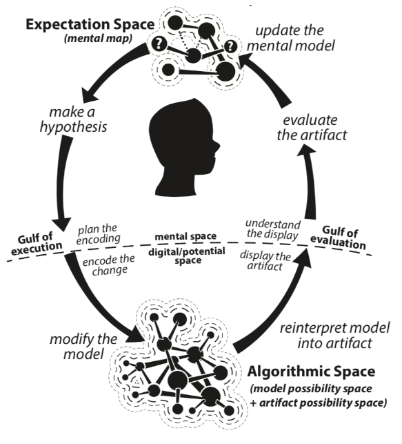
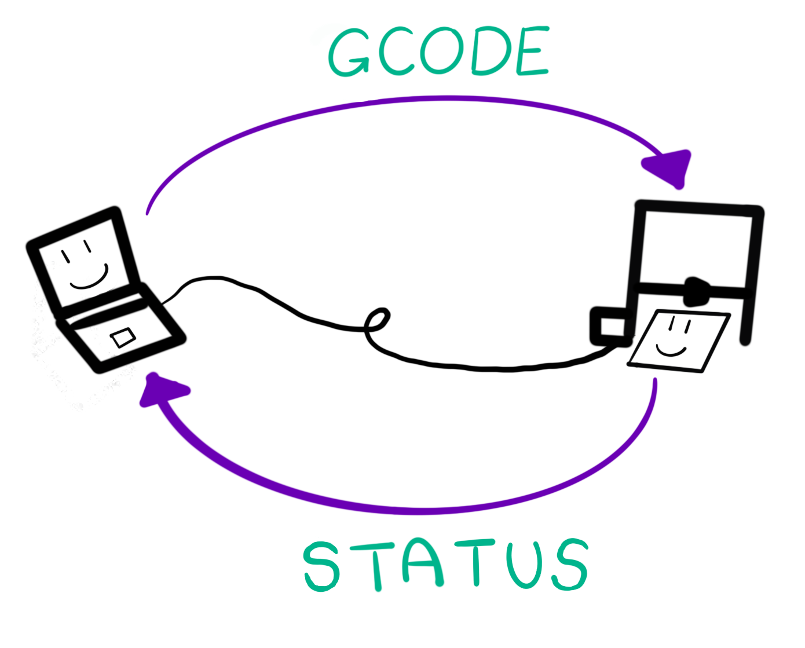
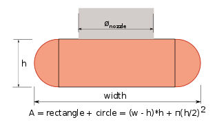

final project!
the results!


concept!
My project conceit was to send gcode commands directly to my printer from p5.js and use this system to design & print 3 vases. I'll take some time here to explain and motivate this concept:p5.js is "a Javascript library for creative coding, with a focus on making coding accessible and inclusive for artists, designers, educators, beginners, and anyone else!". It's free & open-source, and is an interpretation of Processing for the web. p5 makes it easy for people to start coding fast (you can start coding straight from the online editor, no downloads required), and it's geared towards visual design; right out the box, you can start pushing pixels to the screen to make lines, shapes, and pretty colors. So, the p5 environment/community/++ feels well-suited to 3D printing explorations!
A CAD to slicer (e.g. Rhino to Cura) workflow abstracts away tedious gcode details, but it also requires owning & learning CAD. Some users, however, might appreciate the control offered by direct gcode manipulation. This system is geared towards the latter. In particular, I want to explore how printing from p5 might offer a method for repeatable & controlled experimentation (e.g. testing/tuning/calibrating the machine, learning how the printer works, examining material properties) as well as open-ended exploration (e.g. generative form-finding, quick design iterations). For both of these dual considerations, a useful reference for me is Kate Compton's so-called 'grokloop':

In evaluating a system that produces artifacts, Compton conceptualizes the 'gulf of execution' (the time between planning & executing an idea for an artifact) and the 'gulf of evaluation' (the time it takes to generate and display the artifact itself). 3D printing has an inherently slow gulf of execution- the time it takes to see the artifact can be on the order of minutes, hours, or even days. In printing from p5, one design goal is to more tightly couple design execution and evaluation. While we can't decrease print times, we might encourage more rapid exploration of the design space by supporting a workflow that is more conversational.
implementation!
For this project, I worked pretty horizontally; I tried to get diffferent components working well enough to play around with and get a sense of the whole system without getting too caught up in the details. Some elements of the system include:communication The printer and p5 talk over USB using serial communication. After receiving the gcode command, the printer will reply with a status. This might be 'busy' (e.g. executing a commnand, like heating up the bed), 'error' (e.g. invalid gcode), or 'ok' (the command was successfully added to the buffer). We send gcode and wait for the 'ok' status response before sending the next line to ensure reliable communication.

visualization From the gcode commands, we can dynamically generate p5 geometry to render on the screen.
api To formulate commands, there's a pretty pared down api which formats marlin-flavored gcode to send. As an example, some of the methods look like this:
- autoHome() home the printer (G28)
- setNozzleTemp(temp) set the nozzle temp and wait for it to heat up (M109 S{temp})
- moveExtrude(x, y, z, v, e) move to (x,y,z) coordinates at velocity {v} while extruding {e} mm of filament (G1 X{x} Y{y} Z{z} F{v} E{e})
feedback ToDo
a brief aside on flow math
To calculate the amount of filament to extrude, slicers model how filament is extruded on top of a surface. Slic3r, for example, has some nice docs on how they go about doing this by assuming the cross-sectional shape is a rectangle with semi-circular ends.

I take a more naive approach to start: assuming continity, we set the volume of material before and after the nozzle to be equal: $$ V_{in} = V_{out} $$ $$ e\pi r_{filament}^2 = l\pi r_{nozzle}^2 $$ $$ e = \frac{r_{nozzle}}{r_{filament}}l$$ This equation for cylinders extruded in mid-air (not on a surface) may even be more accurate for some of the line work I want to try. The extruded filament definitely has a large radius than the nozzle when you up the flow rate, so this isn't totally true... but in any case, it seems to give me a reasonable starting point.
experiments!
To build out and test the system, I ran through a few 'experiments' to print 3 vases. I wanted the first to be a proof of concept to print something that might be straightforward to build from e.g. Rhino. I wanted the second and third to be process artifacts built from exploring the printing techniques made accessible by the system. Finally, I also wanted to build a more utilitarian 'wizard' that can help with bed levelling.experiment one: proof of concept
In p5, playing with sine waves of varying amplitudes and frequencies is an easy way to get fun results fast. So, for may first vase, I wanted some undulating pattern on an otherwise-normal cylinder. This was a chance to test out my first pass at a 'pre-viz' rendering! Here's an example of what that looked like:After I settled on a look I liked, I had to reckon with what is physically possible, i.e. test printing it! Since this is a proof of concept, I started small. This helped me tune my flow rate and speeds a bit.

After a couple print errors from not setting the bedtemperature high enough for adhesion, I went big and ended up with a this vase:

experiment two: dots & lines
Taking LIA's filament sculptures as inspiration here, I wanted to try some some delicate linework. It felt like this is where the p5 workflow could really shine! My idea was to extrude 'dots' that serve as anchors for 'lines'. At first, I thought that the lines should be drawn sloooooowwwwwlllyyy so that the filament could cool and stiffen back up while it travelled. That wasn't the case:
I learned that I should actually move from dot-to-dot quite quickly with the lines, which tensions the line and reduces sagging. I ended up extruding 3 mm high 'dots' adhesion lines with the print head moving at 2000 mm/min. On my first pass, I extruded a dot, made a line, extruded another dot, etc. The tail end of the line, though, would sag when I did this. I settled on moving around to place each of my dots first, then connecting them with a line. This method was prone to stringing, but I was able to reduce that quite a bit by playing around with my retraction settings (i.e. move from spot to spot while retracting filament instead of extruding). Here's a video of one being built up:
After I could make one, I could try playing with different structures! A tried some that twist, or get smaller as they climb up, and both. Though it took a good while to come up with the settings for my first one, I was actually quite surprised at how well the next iterations worked. My favorite one was the taller twisty fella!


experiment three: loops & texture
Experiment two required precise tuning of variables; for experiment three, I explored what small perturbations to a well-calibrated machine might look like. If the nozzle is too close to the bed, we get little-to-no filament out; if it's too high, then we get a ball of filament stuck to the nozzle. In betwee, we get different loops of varying sizes:
So I made the exciting trip out of the x-y plane! To get varying loops and texture, I tried moving along a sine wave to build up a textured surface. I figured a sine wave would give good/normal adhesion on the edges, and varying texture in the middle. Again, there was a lot of exploring the parameter-space; extruding from too low a height yielded no effect, and too high produced a stringy mess. I made some swatches while testing this out. You can see that the first layers were often more unruly than the subsequuent ones; often the higher layers looked pretty normal.

To achieve the desired effect, I ended up increasing the amplitude of the sine wave over time to maintain the texture:
While still a bit rough around the edges, I like how this vase turned out!


experiment four: up & to the left
I had previously tried to print a springy helix with rhino/grasshopper; as a comparison of the process, I tried to do the same here. Again, this was about striking a balance between speed, climb height, and helix radius. I was able to iterate much more quickly this time around:I found that above a certain height, the entire structure began vibrating, messing up the helix. By wrapping around a tighter radius, I was able to climb a bit higher though!


experiment four: clippy bed leveling
To see how this might be used in a calibration context, I tried a simple webpage that steps through the process of levelling the bed. It's not quite done... but a general idea is here.next steps
There are likely many next steps! But, immediate things I'd like to do are:- finish & improve bed leveling helper
- incorporate live feedback from the printer to p5 while the print is in progress
- wrap some of this up in a little interface to be able to make changes more easily without changing the code
- ++!